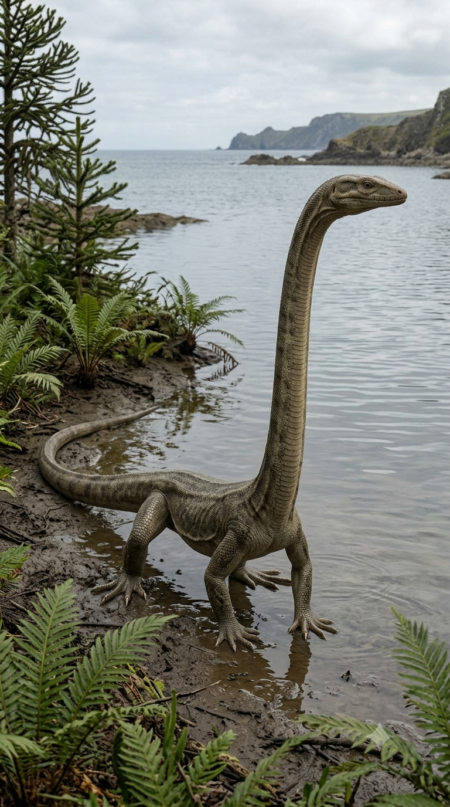
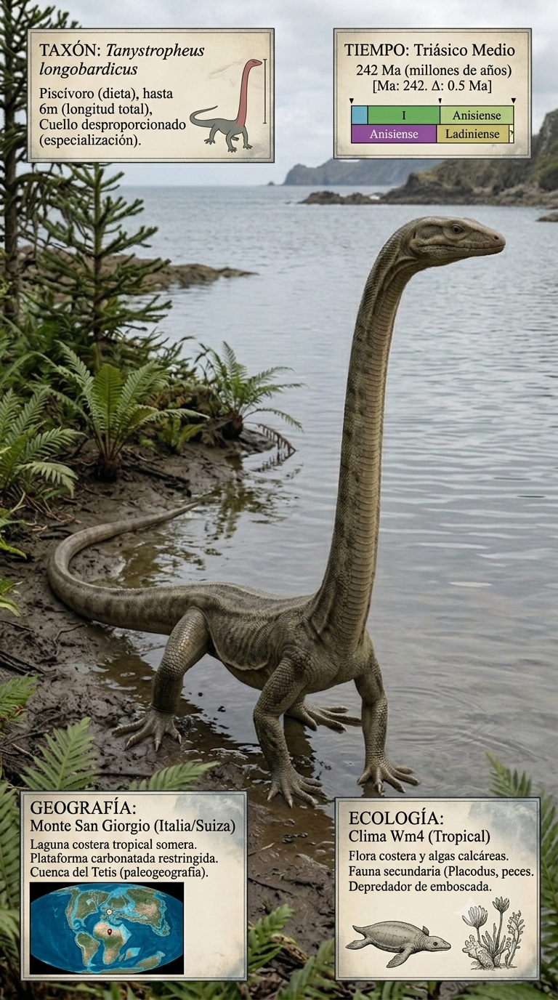
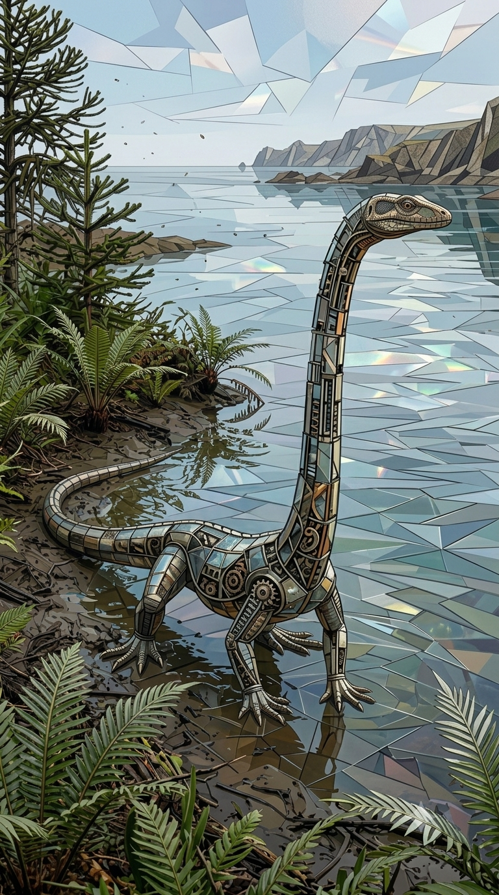
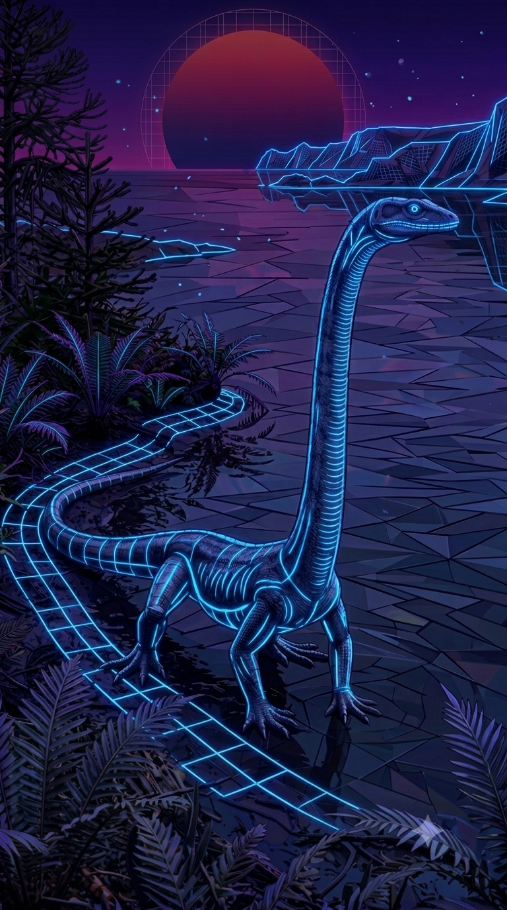

Paleoficha de Tanystropheus




Periodo: Triásico Medio
Edad: Hace aproximadamente entre 242 y 237 millones de años.
Dieta: Piscívoro.
Distribución: Formación Besano, Monte San Giorgio (Región Alpina).
TAXÓN:
Tanystropheus longobardicus
CLADO: Prolacertiformes (Archosauromorpha)
DIETA: Piscívoro (caza mediante emboscada con su cuello extendido)
TAMAÑO: Hasta 6 metros de longitud, con el cuello representando más de la mitad del cuerpo
LOCOMOCIÓN: Semiacuática; nado mediante ondulación de la cola y uso de las extremidades para maniobrar.
TIEMPO:
Triásico Medio (Anisiense/Ladiniense), aproximadamente 242–237 millones de años.
GEOGRAFÍA:
Formación Besano, Monte San Giorgio (Región Alpina). Margen del Mar de Tetis con arrecifes carbonatados, lagunas protegidas y aguas costeras tranquilas de elevada biodiversidad.
ECOLOGÍA:
Las comunidades de algas bentónicas y microorganismos sustentaban un ecosistema compartido con placodontes, peces actinopterigios y ammonoideos primitivos. Tanystropheus ocupaba el nicho de depredador de emboscada, utilizando su extraordinario cuello para capturar peces sin desplazar el resto del cuerpo. Competía con otros pequeños depredadores marinos por los recursos alimenticios.
CLIMA:
Wm10 (Marino costero). Condiciones cálidas y estables propias de una plataforma marina tropical/subtropical.
ESTADO ECOLÓGICO:
Estable. Representa una de las adaptaciones anatómicas más extremas y enigmáticas conocidas entre los reptiles del Triásico.
Vídeo PalEntropía:
▶ Ver Short en YouTube